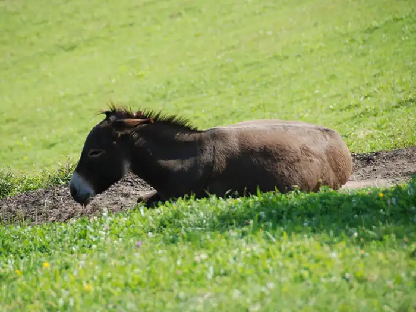

Dobrodošli na turistični kmetiji Smodiš
Odkrijte mir, naravo in domačnost v osrčju Kolpske doline.
Naša ponudbaPrava domača izkušnja
Pri Smodiševih vas pričaka pristen stik z naravo, lokalna hrana in toplo družinsko vzdušje. Uživali boste v domačih dobrotah, neokrnjeni pokrajini in prijetnih dejavnostih za vse generacije.
